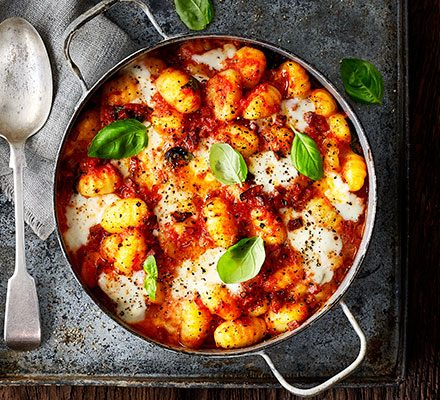

Gnocchi with tomatos recipe

Ingredients
- Olive oil
- Onion
- Red pepper
- Garlic clove
- Chopped tomatoes
- Gnocchi
- Basil
- Mozzarela
How to prepare
- Heat grill to high. Heat 1 tbsp olive oil in a large frying pan, then soften 1 chopped onion and 1 finely chopped red pepper for 5 mins.
- Stir in 1 crushed garlic clove, fry for 1 min, tip in 400g chopped tomatoes and 500g gnocchi, then bring to a simmer.
- Bubble for 10-15 mins, stirring occasionally, until the gnocchi is soft and the sauce has thickened.
- Season, stir through a handful of torn basil leaves, then transfer to a large ovenproof dish..
- Scatter with torn chunks of half a 125g mozzarella ball, then grill for 5-6 mins until the cheese is bubbling and golden.